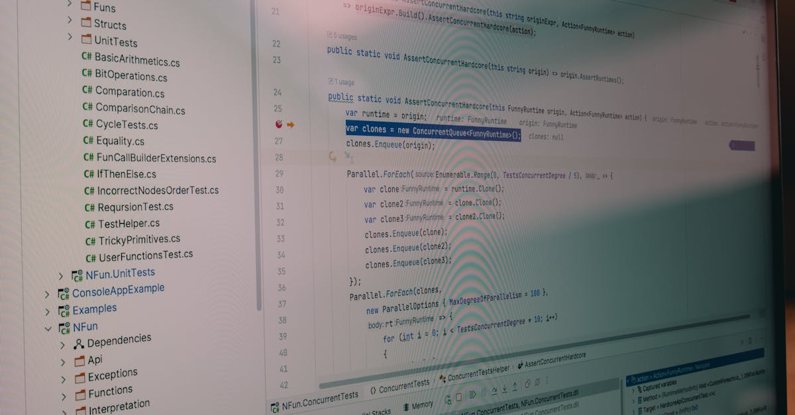

L'Innovation Sud-Coréenne : Quand la Blockchain Rencontre la Finance Publique
La Corée du Sud, pays réputé pour son avance technologique et son adoption rapide des innovations numériques, s'apprête à franchir une nouvelle étape majeure dans l'utilisation de la technologie blockchain. Au quatrième trimestre de cette année, le gouvernement sud-coréen prévoit de tester des jetons de dépôt basés sur la blockchain pour gérer ses dépenses publiques. Cette initiative audacieuse vise à transformer la manière dont les fonds gouvernementaux sont alloués, dépensés et tracés, promettant une efficacité accrue, une transparence renforcée et une réduction significative des coûts administratifs. L'idée centrale est de tokeniser les fonds publics, transformant ainsi l'argent liquide traditionnel en actifs numériques programmables. Ces jetons, une fois émis, pourront être dotés de règles spécifiques, telles que des limites de dépenses ou des restrictions sur les industries ou les projets éligibles. Cette approche novatrice pourrait bien redéfinir les standards de la gestion financière gouvernementale, non seulement en Corée du Sud, mais potentiellement à l'échelle mondiale. L'intégration de la blockchain dans ce domaine critique souligne la reconnaissance croissante de son potentiel au-delà des applications financières privées, ouvrant la voie à des systèmes plus intelligents et automatisés pour la gestion des ressources publiques. Cette expérimentation sud-coréenne est donc un cas d'étude fascinant pour tous les acteurs intéressés par l'avenir de la finance et de la technologie, y compris ceux qui observent de près les stratégies d'investissement automatisé dans le domaine des cryptomonnaies.
Les Avantages des Jetons de Dépôt Programmables
L'un des principaux avantages de l'utilisation de jetons de dépôt basés sur la blockchain réside dans leur programmabilité. Contrairement aux fonds traditionnels, ces jetons peuvent être configurés avec des règles prédéfinies qui régissent leur utilisation. Par exemple, il est possible d'établir des limites de dépenses claires, garantissant qu'un montant spécifique ne soit pas dépassé pour une transaction ou un projet donné. De plus, la programmabilité permet de spécifier précisément les secteurs industriels ou les types de projets pour lesquels ces fonds peuvent être utilisés. Cela élimine la nécessité d'audits complexes et coûteux, car la conformité est intégrée directement dans le jeton lui-même. La blockchain assure un enregistrement immuable et transparent de toutes les transactions, rendant la falsification ou la mauvaise utilisation pratiquement impossible. En élimitant les intermédiaires traditionnels, tels que les banques ou les processeurs de paiement, les frais de transaction peuvent être considérablement réduits. Cette efficacité accrue se traduit par une meilleure allocation des ressources publiques, permettant aux gouvernements de consacrer davantage de fonds aux services essentiels plutôt qu'aux frais administratifs. L'automatisation des processus de vérification et de conformité libère également du temps et des ressources humaines précieuses. Ces caractéristiques ouvrent des perspectives intéressantes pour l'optimisation des flux financiers, un principe qui trouve un écho particulier dans le monde du trading algorithmique où l'efficacité et la précision sont primordiales.
Réduction des Audits et des Frais de Transaction : Un Gain d'Efficacité
La mise en œuvre de jetons de dépôt blockchain pour les dépenses publiques promet une réduction drastique des audits traditionnels. Dans les systèmes actuels, la vérification de la conformité des dépenses et la prévention de la fraude nécessitent des processus d'audit longs, coûteux et souvent manuels. Avec la blockchain, chaque transaction est enregistrée de manière immuable et transparente. Les règles de dépense programmées directement dans le jeton garantissent que les fonds ne peuvent être utilisés que conformément aux directives établies. Cela crée un enregistrement auditable en temps réel, éliminant le besoin d'enquêtes post-facto complexes. Les autorités peuvent ainsi surveiller l'utilisation des fonds de manière continue et instantanée. Parallèlement, la suppression des intermédiaires financiers traditionnels lors des transactions supprime une couche de coûts. Les banques, les processeurs de paiement et autres entités facturent généralement des frais pour leurs services. En utilisant des transactions peer-to-peer sur une blockchain, ces frais peuvent être considérablement réduits, voire éliminés. Cette économie directe sur les frais de transaction, combinée à la réduction des coûts liés aux audits, représente une amélioration significative de l'efficacité financière pour le gouvernement. Ces gains d'efficacité sont directement transposables aux stratégies de trading où la minimisation des frais et l'optimisation des processus sont essentielles pour maximiser les rendements. Les agents IA de trading, par exemple, bénéficient grandement de transactions rapides et à faible coût pour exécuter des stratégies complexes sur les marchés de cryptomonnaies.

Implications pour la Transparence et la Lutte contre la Corruption
La technologie blockchain, par sa nature décentralisée et immuable, offre un potentiel transformateur pour renforcer la transparence dans la gestion des finances publiques et lutter plus efficacement contre la corruption. Chaque transaction effectuée avec ces jetons de dépôt sera enregistrée sur un registre distribué, accessible aux parties autorisées. Cette visibilité accrue permet de suivre le parcours des fonds publics de manière précise, depuis leur émission jusqu'à leur utilisation finale. Les citoyens et les organismes de surveillance pourront vérifier plus facilement comment l'argent public est dépensé, ce qui est un élément clé pour la confiance et la responsabilité gouvernementale. La programmabilité des jetons ajoute une couche supplémentaire de contrôle. En définissant des règles strictes sur qui peut dépenser quoi et où, le risque de détournement de fonds ou d'utilisation abusive est considérablement réduit. Les contrats intelligents peuvent être conçus pour déclencher des alertes automatiques en cas de transactions suspectes ou non conformes. Dans les pays où la corruption est un défi majeur, l'adoption de telles technologies pourrait constituer une avancée significative. Bien que la blockchain ne soit pas une solution miracle contre la corruption, elle fournit des outils puissants pour la prévention, la détection et la responsabilisation. Les principes de transparence et de traçabilité inhérents à la blockchain résonnent avec les exigences des marchés financiers modernes, où la confiance est primordiale. Les plateformes de trading crypto, y compris celles utilisant des agents IA sophistiqués, s'appuient sur des données transparentes et fiables pour prendre des décisions éclairées.
Défis et Opportunités pour l'Adoption Globale
Malgré les avantages prometteurs, l'adoption généralisée des jetons de dépôt blockchain pour les dépenses publiques n'est pas sans défis. La scalabilité des réseaux blockchain est une préoccupation majeure. Les systèmes gouvernementaux impliquent un volume de transactions potentiellement très élevé, et il est crucial que la technologie puisse gérer ce flux sans ralentissement ni augmentation des coûts. La sécurité est une autre priorité absolue. Bien que la blockchain soit intrinsèquement sécurisée, les points d'accès et les interfaces utilisés par les gouvernements doivent être robustes pour prévenir les cyberattaques. La réglementation est également un domaine complexe. Les cadres juridiques actuels doivent être adaptés pour intégrer pleinement cette nouvelle forme de gestion des fonds. La formation du personnel gouvernemental à l'utilisation de ces nouvelles technologies est essentielle pour une transition réussie. Enfin, la volatilité des cryptomonnaies, si les jetons étaient directement liés à des actifs volatils, pourrait poser problème pour la stabilité des dépenses publiques, bien que des solutions comme les stablecoins ou des jetons adossés à des devises fiat puissent atténuer ce risque. Cependant, les opportunités sont immenses. Au-delà de l'efficacité et de la transparence, cette technologie peut favoriser l'inclusion financière en rendant les services gouvernementaux plus accessibles. Elle peut également stimuler l'innovation dans le secteur de la fintech et encourager le développement de nouvelles applications basées sur la blockchain. L'expérience sud-coréenne pourrait servir de modèle pour d'autres nations, ouvrant la voie à une nouvelle ère de gestion financière publique plus efficiente et responsable. Pour les entreprises spécialisées dans le trading algorithmique, comprendre ces évolutions macroéconomiques est crucial pour anticiper les tendances du marché et adapter leurs stratégies.
L'IA et la Blockchain : Un Duo Gagnant pour le Futur Financier
L'initiative sud-coréenne met en lumière la synergie croissante entre la blockchain et l'intelligence artificielle, deux technologies qui redéfinissent le paysage financier. Alors que la blockchain apporte la sécurité, la transparence et l'efficacité des transactions, l'IA peut analyser les vastes ensembles de données générés pour optimiser la gestion des fonds, détecter les anomalies et prédire les besoins futurs. Imaginez un agent IA, alimenté par les données en temps réel d'un système de dépenses publiques basé sur la blockchain. Cet agent pourrait identifier des inefficacités, suggérer des réallocations budgétaires optimales, ou même automatiser des processus complexes de conformité et d'approbation. Dans le domaine du trading de cryptomonnaies, cette combinaison est déjà une réalité. Les plateformes comme CryptoMind AI utilisent des agents IA sophistiqués pour naviguer sur les marchés 24h/24, analysant des données complexes, identifiant des opportunités et exécutant des transactions avec une rapidité et une précision que les humains ne peuvent égaler. La capacité de programmer des règles de dépense sur la blockchain fait écho aux stratégies de trading algorithmique où les paramètres sont définis à l'avance. La possibilité de définir des limites, des conditions d'entrée et de sortie, et des règles de gestion des risques est fondamentale pour le succès du trading automatisé. L'expérimentation sud-coréenne, en injectant ces concepts dans la finance publique, pourrait accélérer l'adoption de solutions similaires dans d'autres secteurs, créant un écosystème financier plus intelligent, plus sûr et plus efficace pour tous. L'avenir de la finance, qu'elle soit publique ou privée, sera indéniablement façonné par l'intégration de ces technologies de pointe.
Conclusion : Vers une Finance Publique Augmentée par la Technologie
L'annonce de la Corée du Sud concernant les tests de jetons de dépôt basés sur la blockchain pour les dépenses publiques marque un tournant potentiel dans la gestion des finances gouvernementales. En exploitant la programmabilité, la transparence et l'efficacité de la blockchain, le pays vise à rationaliser les processus, réduire les coûts et renforcer la responsabilité. Les avantages anticipés, tels que la diminution des audits, la réduction des frais de transaction et une lutte accrue contre la corruption, sont considérables. Bien que des défis subsistent en matière de scalabilité, de sécurité et de réglementation, cette initiative pionnière ouvre la voie à une adoption plus large de technologies innovantes dans le secteur public. Ce mouvement souligne une tendance de fond : la convergence des technologies décentralisées et de l'intelligence artificielle pour créer des systèmes financiers plus performants. Pour les investisseurs et les observateurs du monde des cryptomonnaies, ces développements sont essentiels. Ils démontrent la maturité croissante de la technologie blockchain et son potentiel à résoudre des problèmes complexes du monde réel, bien au-delà du trading spéculatif. L'émergence d'agents IA capables de gérer des actifs numériques, qu'il s'agisse de fonds personnels ou, demain, de fonds publics, représente une révolution en cours. La Corée du Sud ne fait pas que tester une nouvelle technologie ; elle expérimente une nouvelle philosophie de gouvernance financière, plus efficace, transparente et adaptée à l'ère numérique.